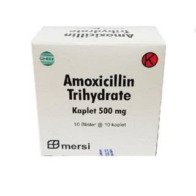

Amoxicillin

Adalah obat untuk mengatasi berbagai jenis bakteri. obat antibiotik ini tersedia dalam bentuk tablet maupun sirup. obat ini akan menghambat pertumbuhan bakteri yang menyebabkan infeksi di organ paru-paru, saluran kemih, kulit serta di bagian telinga hidung dan tenggorokan